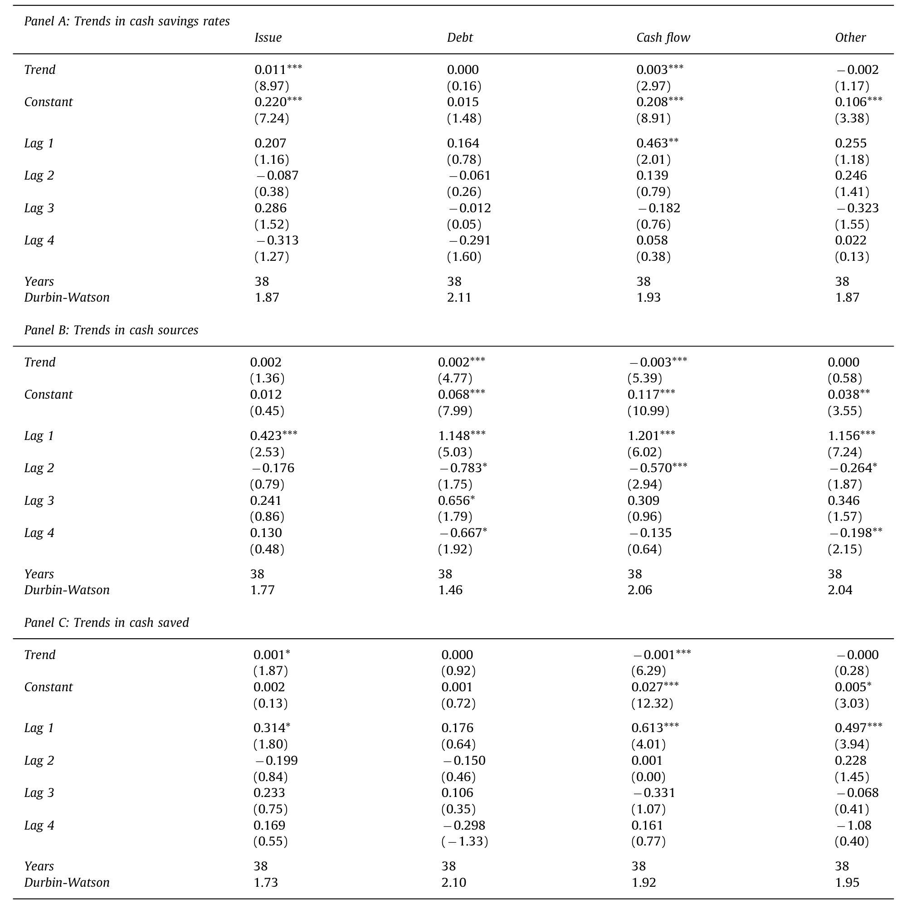
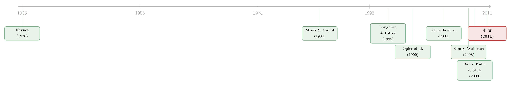

为什么公司发了股票，却把钱原封不动地存了起来？
本文读的是 McLean (2011, Journal of Financial Economics)：美国公司发股票筹来的钱，越来越多地被原封不动地存成现金——1970 年代每发行 1 美元只存下 0.23 美元，到最近十年已涨到 0.60 美元。这股上升的真正推手不是「趁高价圈钱」的择时动机，而是日益增强的预防性储蓄需求：公司趁着发行成本低的好时候多发、多存，好让自己在坏天气里不必被迫高价融资。
1 一个反直觉的现象
先问一个看似幼稚、实则很难回答的问题：公司发行股票，是为了干什么？
教科书的标准答案干净利落——为了投资。公司有了好项目、手头钱不够，于是向市场要钱，拿到钱就去买设备、建厂房、做研发。融资是投资的「前置环节」，钱一进门就该花出去。在这个图景里，发行和现金账户之间几乎不该有什么停留：钱过一遍手，就变成了机器。
可现实里有一个长期被忽视的细节：很多公司发完股票，并没有急着把钱花掉，而是把它存进了现金账户，一存就是好几年。更耐人寻味的是，这种「发了就存」的倾向，在过去四十年里一路走高。本文作者把它量化成一句让人过目不忘的话：
1970 年代，每 1.00 美元的股票发行，最终带来 0.23 美元的现金储蓄；到了最近十年（金融危机前），每 1.00 美元发行带来的现金储蓄已经升到 0.60 美元。也就是说，「发行—储蓄」的倾向在样本期内上升了 100% 以上。
接着，一个自然的问题是：这究竟是怎么回事？如果发股票本来是为了投资，为什么钱进来之后越来越多地被「冻」在账上不动？而且，为什么是一个跨越几十年的、单调向上的长期趋势——这种趋势在债务融资、经营现金流这些其他资金来源上都看不到，唯独发行如此？
本文就是要解开这个谜。而它给出的答案，最终落在两个相互竞争的故事之间的对决上：是「预防性动机」，还是「市场择时」。
2 怎么把「发行—储蓄」量出来
要回答上面的问题，第一步得先把这个模糊的概念变成一个可以测量的数字。怎么测「1 美元发行带来多少现金储蓄」？
作者的做法，继承自 Kim and Weisbach (2008) 和 Hertzel and Li 的思路：把当年现金存量的变化，回归到当年各个资金来源上。回归方程是这样的（这是本文最核心的工具，值得一字一句看清楚）：
这里 \(\Delta Cash_i\) 是公司年末现金减年初现金（都按年初总资产标准化），\(Issue_i\) 是股票发行的现金收入，\(Debt_i\) 是债务销售收入，\(Cashflow_i\) 是经营现金流（净利润加折旧摊销），\(Other_i\) 是资产出售等其他来源，\(Assets_i\) 是总资产的对数。
这个回归的妙处在于：系数可以直接解读为「每一美元该来源的资金，有多少分被存成了现金」。\(b_1=0.23\) 就是「每发行 1 美元存下 0.23 美元」。
但真正关键的一步在于估计方式。作者没有把所有年份混在一起跑一个大池化回归，而是仿照 Fama and MacBeth (1973) 的精神，每一年单独估一次，于是得到了一条 \(b_1\) 随时间变化的时间序列。为什么这么做？因为本文的核心问题不是「平均而言储蓄率是多少」，而是「这个储蓄率怎样随时间演变」。混合回归会把趋势抹平，而逐年回归恰恰把趋势凸显了出来。（作者也用带交互项、按公司聚类标准误的面板回归做了稳健性检验，结论一致，从而回应了 Petersen (2009) 关于面板标准误的担忧。）
样本是 Compustat 1971–2008 年的美国公司——之所以从 1971 年起步，是因为现金流量表里的发行现金流数据从那年才开始有。剔除金融业（SIC 6000–6999）和公用事业（SIC 4900–4999），并入 CRSP 股价数据，各会计变量在 1% 与 99% 分位缩尾，最终得到 140,233 个公司-年观测。值得一提的是，这里的 \(Issue\) 是一个很宽的发行口径：它囊括了一切能给公司带来现金流入的股票发行——SEO、私募、配股、优先股、债转股、员工期权行权等等，唯独排除了不产生现金流入的换股并购。Fama and French (2005) 早就指出，公司的股票发行里大部分并不是 SEO；在本文样本中，有正 \(Issue\) 的观测占到 68%。
3 主要结果：一条单调上行的曲线
把逐年估出来的 \(b_1\) 画出来，图景一目了然。
发行储蓄率 \(b_1\) 在 1970 年代平均只有 0.231，到最近十年（危机前）平均已达 0.600，整整翻了一倍多。2008 年金融危机当口它骤降到 0.452——这本身也很说明问题：坏天气一来，发行—储蓄就缩水了。
与之形成鲜明对照的是其他几个来源。经营现金流的储蓄率 \(b_3\) 从 0.224 升到 0.288，但这点上升几乎全发生在 1970 年代，1980 年就到了 0.329，此后基本横住不动。债务和「其他」的储蓄率则在整个样本期内平稳得近乎一条直线。换句话说，「发了就存」的上升趋势是发行所独有的，是一个长期的「世俗趋势」（secular trend），而不是所有资金来源共有的现象。
然后，作者把两件事乘到一起，得到了更震撼的数字——每年「从发行中实际存下的现金量」（即储蓄率 \(b_1\) 乘以发行规模 \(Issue\)）。这个量从 1971 年的 0.006（占资产 0.6%）一路涨到 2006 年的 0.053，接近十倍，2008 年才跌回 0.017。而且自 1985 年起，公司从股票发行中存下的现金，就已经超过了包括经营现金流在内的所有其他来源。一句话：过去二十多年，股票发行已经是美国公司现金的首要来源。
这恰好给 Bates, Kahle, and Stulz (2009) 那个著名的发现补上了机制。他们发现美国公司的现金持有在 1980–2006 年间翻了一倍多，并归因于预防性动机上升；本文则进一步指出，这笔多出来的现金，主要是靠股票发行存下来的，而非靠内部现金流——后者在样本期内反而是萎缩的。

Table 3: reports estimates of trends in the time series
如表 3 所示，作者对这些时间序列正式做了趋势检验：发行储蓄率年均上升约 2.5%，统计上显著。同一节里还有两个对照数字很值得记住——1971 至 2006 年间，公司从经营现金流中存下的现金年均下降约 6%，而从股票发行中存下的现金年均上升约 7%。一升一降之间，资金来源的「主角」悄悄换了人。
4 真正关键的一步：预防性动机 vs. 市场择时
到这里，事实已经摆清楚了：发行—储蓄在上升。但为什么上升？这才是全文的命门，也是两个故事正面交锋的地方。
第一个故事是 预防性动机（precautionary motive）。这个想法可以一直追溯到 Keynes (1936)：拥有宝贵投资机会、同时现金流又波动的公司，应当提前积累预防性现金。道理很朴素——这类公司一旦哪天手头紧，就可能被迫放弃有利可图的项目；而外部融资在「坏天气」里要么贵得离谱，要么干脆借不到。辉瑞财务主管 Richard Passov 的一句话被作者引来作注脚：「历史一再表明，在最需要钱的时候，外部融资可能贵得吓人，甚至根本无处可寻。」（Passov, 2003）流动性会随时间起落（Chordia, Roll, and Subrahmanyam, 2001；Acharya and Pedersen, 2005），既然有好时候也有坏时候，那么可能在未来需要钱的公司，理应趁好时候发行并储蓄，以免在坏时候被迫高价融资。
第二个故事是 市场择时（market timing）。Loughran and Ritter (1995)、Baker and Wurgler (2000, 2002) 等认为，发行决策很大程度上是被股价高估驱动的——趁贵卖股票。Blanchard, Rhee, and Summers (1993)、DeAngelo, DeAngelo, and Stulz (2010) 进一步指出：择时型发行会带来高的发行—储蓄。逻辑是这样的——如果公司主要是为了趁高估圈钱而发行，那么这些钱里只有一部分恰好被投资用掉，大部分会先存着，于是平均看上去就是「发了就存」。照这个逻辑，发行—储蓄的上升，完全可能只是市场择时机会增多的副产品。
两个故事都能解释「发了就存」，怎么分辨？
作者打出了一套组合拳来支持预防性动机、否定市场择时：
其一，预防性动机的代理变量确实在上升。 衡量预防性需求的常用指标——研发支出（R&D）、行业现金流波动率（CFVolatility）——在样本期内系统性上升，而现金股利（Dividends，其缺失往往是财务受限的信号）则在下降。作者把这三者的第一主成分构造成一个综合指标 PREC。更关键的是公司固定效应回归：同一家公司内部，预防性动机的上升，与它发行—储蓄的上升正相关。这把「趋势」从跨公司的构成变化，钉到了公司自身的变化上。
其二，发行—储蓄与发行成本反向相关。 用多个公司层面的流动性度量，作者发现：当一家公司的股票相对更易流动（发行成本低）时，预防性动机的上升与发行—储蓄上升的关系更强；经济扩张期也是如此，而收缩期这种关系明显减弱。这正是预防性故事的精确预言——趁成本低时发行并储蓄，以避免在成本高时被迫发行。
其三，也是最致命的一击：市场择时的指纹找不到。 市场择时理论有一个无法回避的推论——发行—储蓄应当与发行后股票收益负相关（趁高估发行的公司，后续收益应该差）。但本文发现：发行后的股票收益在样本期内并没有变差；常用的投资者情绪代理变量（Baker and Wurgler (2006) 的 RIPO、NIPO、SENTIMENT）在样本期内也没有上升趋势。横截面上，那些存得更多的公司，后续收益也并不更差。既然发行—储蓄与发行后收益毫无负相关，市场择时这个故事就站不住脚。 要想跟本文的事实自洽，任何市场择时理论都必须先解释清楚：为什么发行后收益和发行—储蓄之间什么关系都没有。
于是反转出现了：那个看上去最「行为金融」、最像「精明老板趁高价割韭菜」的现象，骨子里其实是一个非常「理性」的预防性储蓄故事。
这也顺带给「聚合发行活动」这条文献补了一刀。Dittmar and Dittmar (2008) 发现发行潮主要由商业周期解释（扩张期发得多）；本文则指出，在扩张期里，恰恰是预防性动机高的公司发行增加最多、平均储蓄份额也最高。换句话说，商业周期与发行活动的关系，可能有相当一部分要由预防性现金需求来解释。
5 文献脉络
把这篇论文放回它所处的坐标系里，会看得更清楚。
最上游是两条平行的老传统。一条是预防性储蓄：Keynes (1936) 提出的预防性动机，经 Opler, Pinkowitz, Stulz, and Williamson (1999) 对现金持有决定因素的系统刻画、Almeida, Campello, and Weisbach (2004) 的「现金的现金流敏感性」，到 Bates, Kahle, and Stulz (2009) 揭示美国公司现金持有的长期翻倍——这条线一直在问「公司为什么、以及存了多少现金」。另一条是融资与择时：Myers (1984)、Myers and Majluf (1984) 的优序融资理论奠定了「内部资金比外部便宜」的基准，而 Loughran and Ritter (1995)、Baker and Wurgler (2000, 2002) 则提出了与之竞争的市场择时观点。

这两条线长期各说各话。直到 Kim and Weisbach (2008) 和 Hertzel and Li 发现：现金储蓄竟是 SEO 和 IPO 募资的最大用途——这等于把「发行」和「储蓄」这两个原本分属不同文献的概念焊在了一起。本文正站在这个焊点上，做了两件前人没做的事：一是把储蓄率拉成时间序列，揭示出它的长期上行趋势；二是用预防性动机给这个趋势找到了归宿，并干净利落地排除了市场择时。据作者所言，「预防性现金储蓄」此前从未被当作股票发行的一个动机提出过——这正是本文最原创的一笔。
6 评论与延伸（Q&A + 研究方向）
(a) 几个可能的疑问
Q：发行—储蓄上升，会不会只是因为发股票的公司「换了一批人」（构成变化），而不是同一批公司行为变了？
这正是逐年混合回归无法回答、而公司固定效应回归要处理的问题。本文的固定效应结果显示，同一家公司内部预防性动机的上升与其发行—储蓄的上升正相关，说明趋势不只是构成效应，也有公司自身行为的变化。当然，固定效应无法完全吸收所有时变的公司异质性，这一点下文还会提到。
Q：为什么不直接用 SEO，而要用这么宽的 \(Issue\) 口径（连员工期权、债转股都算）？
因为本文关心的是「发行作为现金来源」这件事的整体图景，而非狭义的增发事件。Fama and French (2005) 指出大多数发行并不是 SEO，若只看 SEO 会漏掉大半。作者也报告，在未列出的检验中，单看 SEO 的储蓄率随时间的模式与宽口径 \(Issue\) 一致，所以口径选择不改变结论。
Q：把「发行—储蓄上升」解读为预防性动机，会不会是循环论证——R&D、波动率本来就和发行同向变动？
这是最值得警惕的地方。R&D 高、波动大的公司本就更可能发股票（它们抵押品少、信息不对称高，不适合举债，这一点 Hall (2002) 有综述）。所以「PREC 上升 ↔ 发行—储蓄上升」可能部分是机械相关。本文真正有分量的证据其实是否定性的那一条：市场择时该留下的负收益指纹完全没出现。预防性故事更多是「在排除了择时之后」的最佳剩余解释，而非被独立证实。
Q：2008 年储蓄率骤降到 0.452，这是不是反而打脸了「预防性」——最需要预防的时候反而存得少？
恰恰相反，这与预防性故事自洽。预防性储蓄的前提是「趁成本低时发行并储蓄」；危机中发行成本飙升、流动性枯竭，公司既发不动也存不下，于是储蓄率下跌。真正打脸的会是「危机中储蓄率不降反升」。
Q：债务为什么不能扮演同样的「预防性蓄水池」角色？
本文指出，整个样本期内债务的储蓄率几乎为零。原因在于，预防性动机高的公司按定义就是高 R&D、高现金流波动、融资受限的公司，而这类公司恰恰最不适合举债（信息不对称高、可抵押资产少）。所以对它们而言，股权发行+储蓄才是可行的预防性工具。
Q：这和「公司一发证券股价就跌」的择时叙事冲突吗？
不完全冲突，但提供了一个不同的视角。市场对发行的负反应可以有多种解释（关于这一点，可参见《公司一发证券股价就跌：是老板在「择时」，还是市场在「定价」？》）。本文的贡献在于指出：至少就「发了之后把钱存起来」这个维度看，数据更像预防性储蓄，而不是趁高估圈钱。
(b) 几个可能的研究问题与提案
1. 债券市场里的「发行—储蓄」与流动性择时。 【经济故事】本文发现债务几乎不被用于现金储蓄，但那是几十年前、且以银行债务为主的图景。如今投资级公司在债券一级市场常常「机会窗口式」发债——趁信用利差低、流动性好时超额发行并囤现金。这与本文的「趁成本低发行并储蓄」逻辑同构，但发生在信用市场。 【可行性】中。数据可用 Mergent FISD（发行明细）+ Compustat（现金）+ TRACE（二级流动性/利差）。识别上可借本文的逻辑：用发行时点的市场流动性/利差作为「发行成本」代理，检验发行—储蓄是否随成本反向变动。难点是债务发行的到期再融资动机与预防性动机难以分离。
2. 外资持有人是否改变了公司的预防性储蓄？ 【经济故事】外国机构投资者往往更看重流动性与下行保护。一家公司外资持股上升后，是否会被「推着」发行更多、囤更多预防性现金（以应对外资在坏天气里的赎回/撤离）？ 【可行性】中。数据用 FactSet/Thomson 13F 类持股 + Compustat。识别可借指数纳入（如 MSCI 可投资度调整）作为外资持股的外生冲击，做 DiD。挑战是外资持股本身与公司质量内生。
3. 用更细的流动性度量重做「发行成本」那条线。 【经济故事】本文用的流动性度量较粗。若用更现代、更干净的有效价差估计（如基于日内或日度数据的方法），能更精确地刻画「发行成本低 → 发行并储蓄」这条链路，甚至识别出哪类公司对发行成本最敏感。 【可行性】高。CRSP 日度数据 + 现成的价差估计方法即可复制并加强本文的横截面检验，工作量可控。
4. 危机后的结构性断点。 【经济故事】本文样本止于 2008。2008 之后量化宽松、超低利率、SPAC 浪潮可能彻底改变了发行—储蓄的算术。最近十五年，发行储蓄率是延续上行，还是因债务过于便宜而逆转？ 【可行性】高。直接把本文的 Fama-MacBeth 逐年回归延伸到 2024，看趋势是否延续或断裂。纯描述性也有发表价值，因为它检验的是一个被广泛引用的「世俗趋势」的稳健性。
7 我的判断
这是一篇典范式的「把一个被忽视的事实量化清楚、再用排除法锁定机制」的实证论文。它的最大贡献不在某个聪明的识别设计，而在于问对了问题：所有人都在研究公司持有多少现金、为什么发股票，却没人去看「发行的钱被存下来的比例如何随时间演变」。一旦把这条曲线画出来，再配上「市场择时该留的指纹没留下」这个干净的否定性证据，结论就相当有说服力。它把 Kim and Weisbach (2008) 的横截面发现、Bates, Kahle, and Stulz (2009) 的现金持有之谜，用一条「预防性发行—储蓄」的暗线串了起来。
但对识别我有两点保留。第一，机制识别是「剩余式」的。 预防性动机从未被直接证实，它更多是「排除了市场择时之后」的最优解释；而 PREC 与发行同向变动本身存在机械相关的隐忧，公司固定效应也无法吸收所有时变异质性。第二，是否还有第三种故事？ 比如代理问题——管理层囤积现金以扩大自由裁量空间（关于现金为何该「还」出去，可参见《现金为什么一定要「还」出去？——四十年后，重读 Jensen 的自由现金流》）；又或是股价脆弱性驱动的预防（见《「脆弱」的股价，逼出来的现金》）。本文对这些替代解释着墨不多。
后续我最想看到的，是把这条曲线延伸到 2008 年之后的低利率与债务廉价时代——那个时候，「股权发行才是预防性现金主来源」这个结论还成立吗，还是会被便宜的债务反转？这将是对本文「世俗趋势」最有力的一次外部检验。
参考文献
- Almeida, H., Campello, M., Weisbach, M.S. (2004). The cash flow sensitivity of cash. Journal of Finance 59, 1777–1804.
- Baker, M., Wurgler, J. (2000). The equity share in new issues and aggregate stock returns. Journal of Finance 55, 2219–2257.
- Baker, M., Wurgler, J. (2002). Market timing and capital structure. Journal of Finance 57, 1–32.
- Baker, M., Wurgler, J. (2006). Investor sentiment and the cross section of stock returns. Journal of Finance 61, 1645–1680.
- Bates, T., Kahle, K., Stulz, R. (2009). Why do U.S. firms hold so much more cash than they used to? Journal of Finance 64, 1985–2021.
- DeAngelo, H., DeAngelo, L., Stulz, R. (2010). Seasoned equity offerings, market timing, and the corporate lifecycle. Journal of Financial Economics 95, 275–295.
- Dittmar, A., Dittmar, R. (2008). The timing of financing decisions: an examination of the correlation in financing waves. Journal of Financial Economics 90, 59–83.
- Fama, E.F., French, K.R. (2005). Financing decisions: who issues stock? Journal of Financial Economics 73, 229–269.
- Fama, E.F., MacBeth, J.D. (1973). Risk, return, and equilibrium: empirical tests. Journal of Political Economy 71, 607–636.
- Keynes, J.M. (1936). The General Theory of Employment, Interest and Money. Harcourt Brace, London.
- Kim, W., Weisbach, M. (2008). Motivations for public share offers: an international perspective. Journal of Financial Economics 87, 281–307.
- Loughran, T., Ritter, J. (1995). The new issues puzzle. Journal of Finance 50, 23–51.
- Myers, S. (1984). The capital structure puzzle. Journal of Finance 39, 575–592.
- Myers, S., Majluf, N. (1984). Corporate financing and investment decisions when firms have information that investors do not have. Journal of Financial Economics 13, 187–221.
- Opler, T., Pinkowitz, L., Stulz, R., Williamson, R. (1999). The determinants and implications of cash holdings. Journal of Financial Economics 52, 3–46.
- Passov, R. (2003). How much cash does your company need? Harvard Business Review November, 119–128.
- Petersen, M. (2009). Estimating standard errors in finance panel data sets: comparing approaches. Review of Financial Studies 22, 435–480.